Sand mining, power and shared resources
Governance of sand as a shared resource, with attention to commercial extraction, unequal access and the distribution of environmental and social costs.
CLIMATE · SUSTAINABILITY · PEOPLE & PLACES
Environmental research focused on shared resources, coastal ecosystems and community resilience.
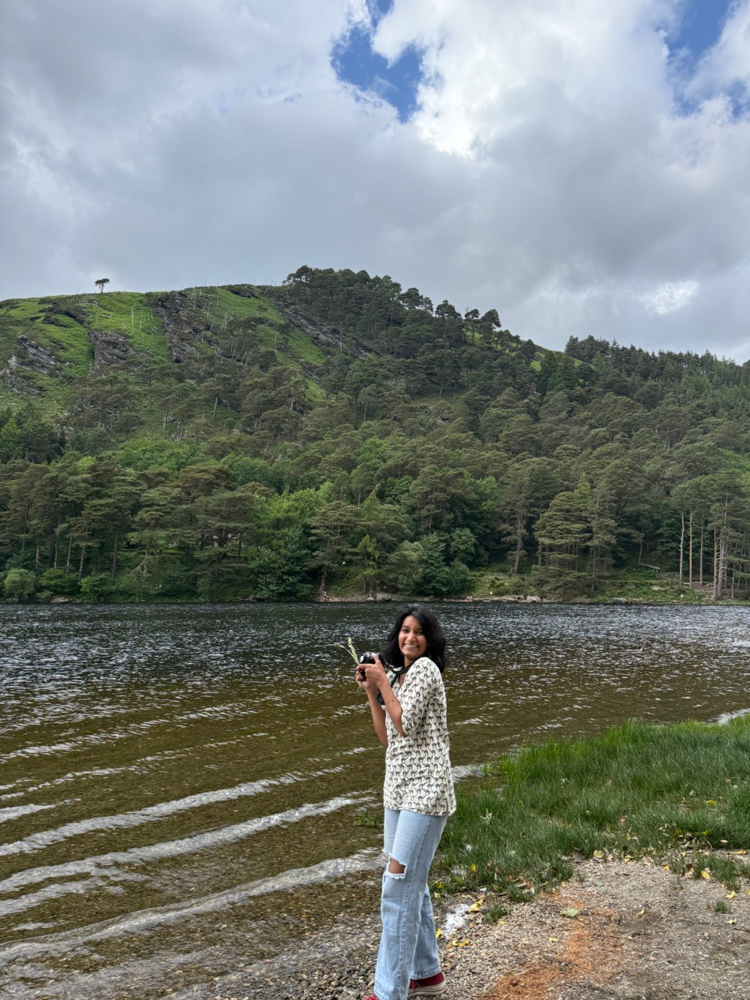
FIELD NOTES · 2026From engineering and project management to environmental practice and climate adaptation, my path has been shaped by people, places and the environment.
Governance of sand as a shared resource, with attention to commercial extraction, unequal access and the distribution of environmental and social costs.
Links between sand extraction, coastal change, habitat disturbance and biodiversity, and how environmental evidence can inform resource management.
Community knowledge and participation in environmental decision-making, coastal livelihoods, adaptation and resilience to climate-related risks.
Selected contributions and projects connecting environmental evidence with lived experience.
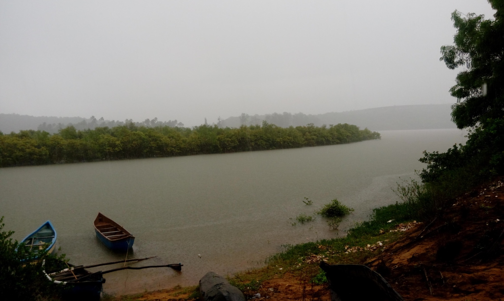
JALSaksham · COMMUNITY CLIMATE RESILIENCE
A community-based climate-resilience initiative in coastal Maharashtra focused on flood preparedness and recovery, informed by local knowledge and community needs.
Project support
Seed funding through Global Citizen Scholars 2026, which selected Kiran as one of 17 Global Citizen Leaders.
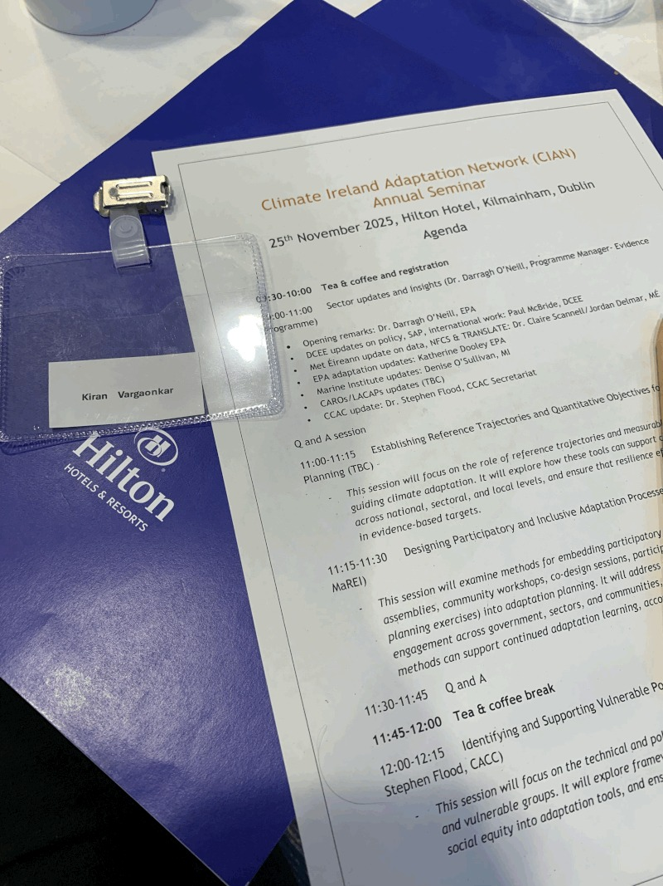
CLIMATE ADAPTATION · CIAN
Contributed to CIAN working groups whose 2026 reports address resilient decision-making and resilience indicator development.
Outputs
Two published working-group reports by Climate Ireland / EPA Ireland.
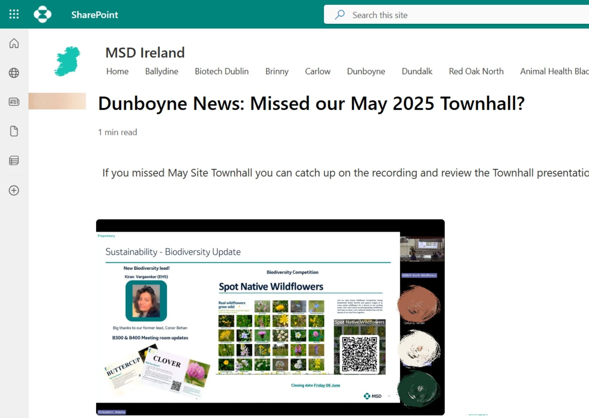
SITE BIODIVERSITY LEAD · MSD DUNBOYNE
As Site Biodiversity Lead at MSD Dunboyne, I created a five-year biodiversity plan for the site, conducted workshops and planned and delivered EHS Week 2025.
Site-wide engagement
Liaised with AIPP to organise a bumblebee walk and coordinated with six other MSD sites. Started a library using books donated by employees and represented site sustainability during monthly inductions for new joiners.
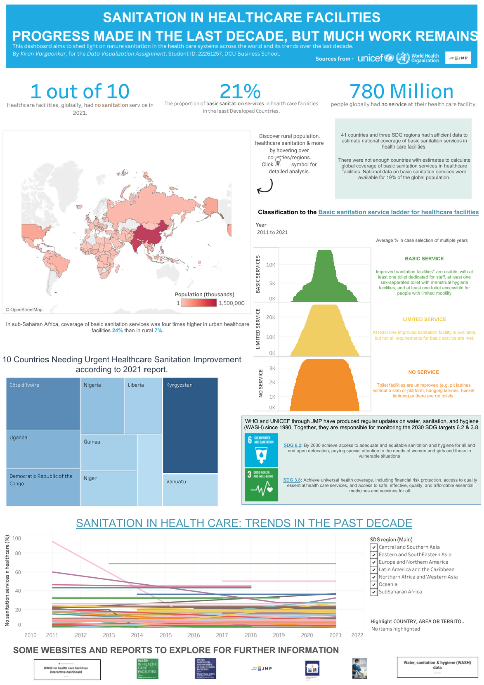
DATA VISUALISATION · TABLEAU
A data-visualisation project exploring global sanitation services in healthcare facilities through country comparisons and trends from 2011 to 2021.
Format
Interactive Tableau dashboard.
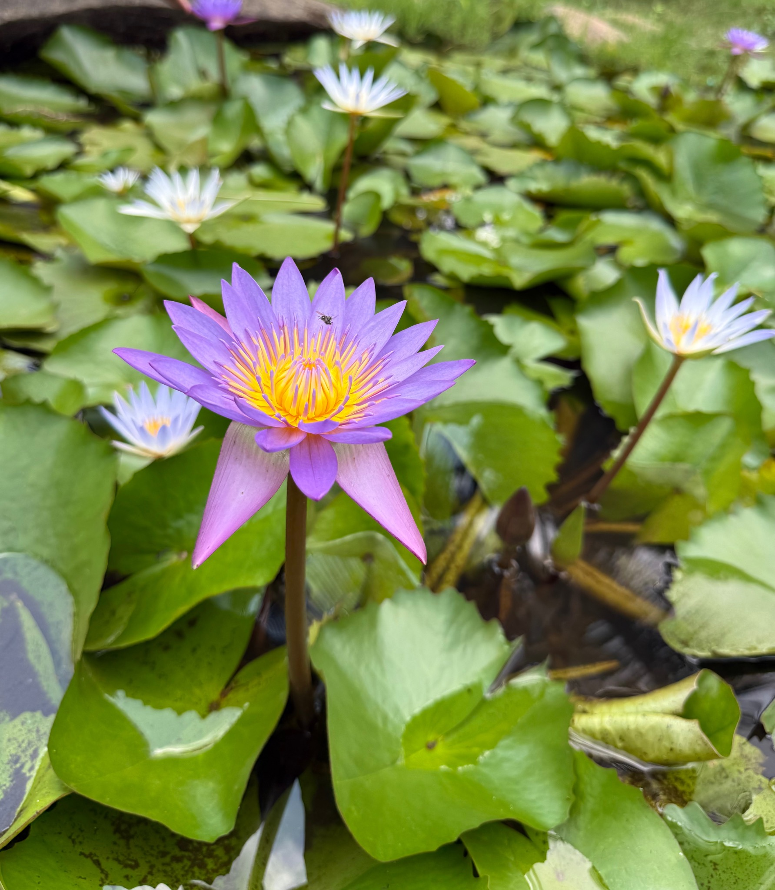
PERSONAL WILDFLOWER ARCHIVE
A personal archive of wildflower photographs and field observations from the Konkan coast.
Explore the wildflowers ↗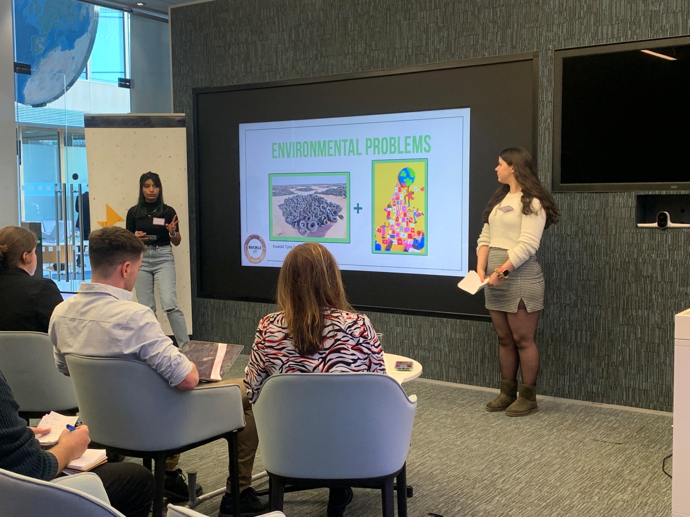
RESEARCH & DEVELOPMENT · SOCIAL INNOVATION
Served as R&D Lead for the Buckle Up project within DCU Enactus, contributing to the project’s research and development. The project was presented at the Citi Pathways to Progress Programme Pitch Event.
Additional role
Also served as Recruitment Officer for Enactus DCU, supporting society recruitment and engagement.
BEng Mechanical Engineering · University of Mumbai
Project Management · Zicom and IAM
MSc Business Management · Dublin City University
MSD Ireland · Dunboyne
Climate resilience, research contributions and community action
ADDITIONAL EXPERIENCE & LEARNING
Writing on climate and sustainability, alongside a personal archive of wildflowers photographed along the Konkan coast.
Read Climate, Confused ↗Other curiosities
Photography · Flower arrangements · Skating
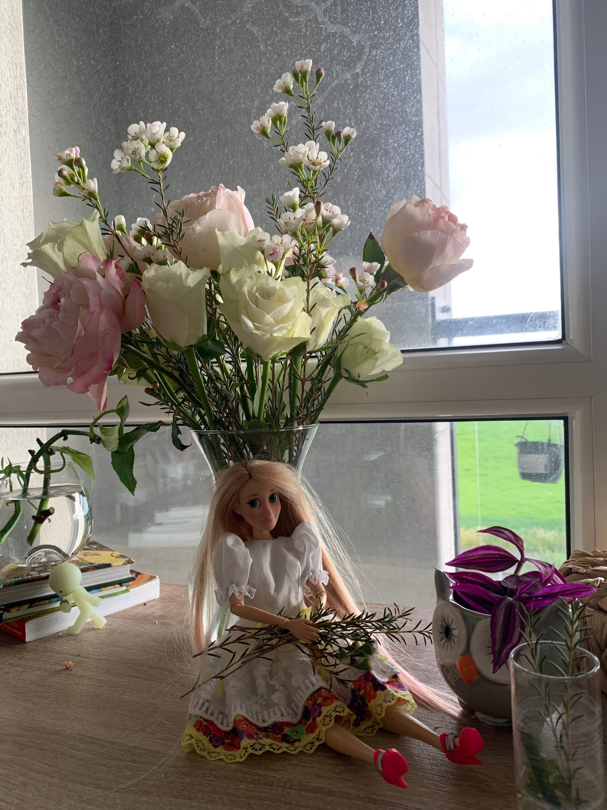
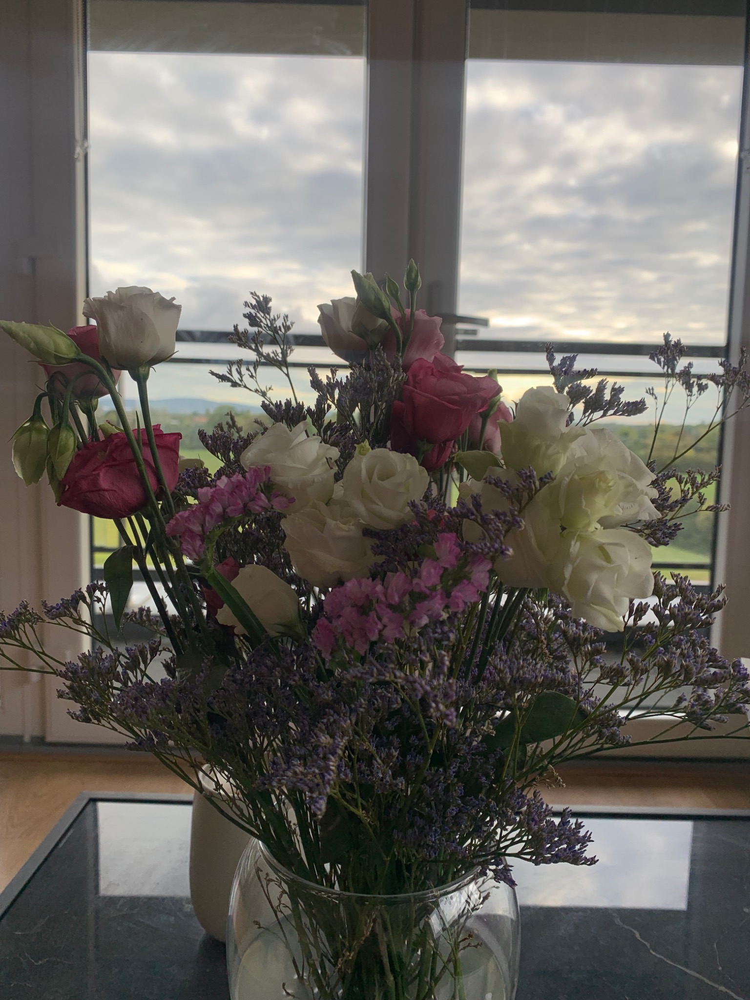
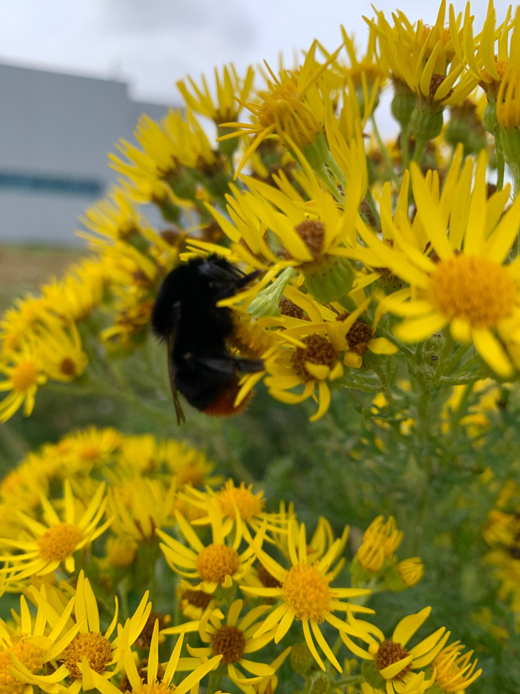
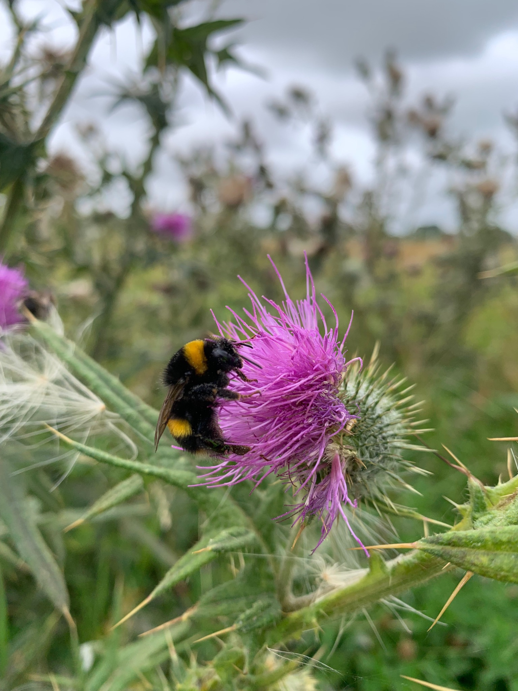
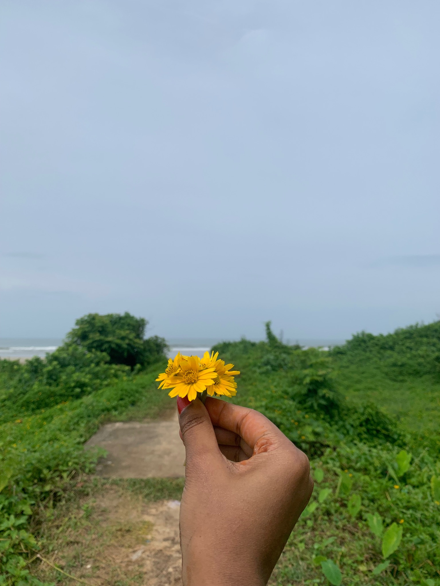
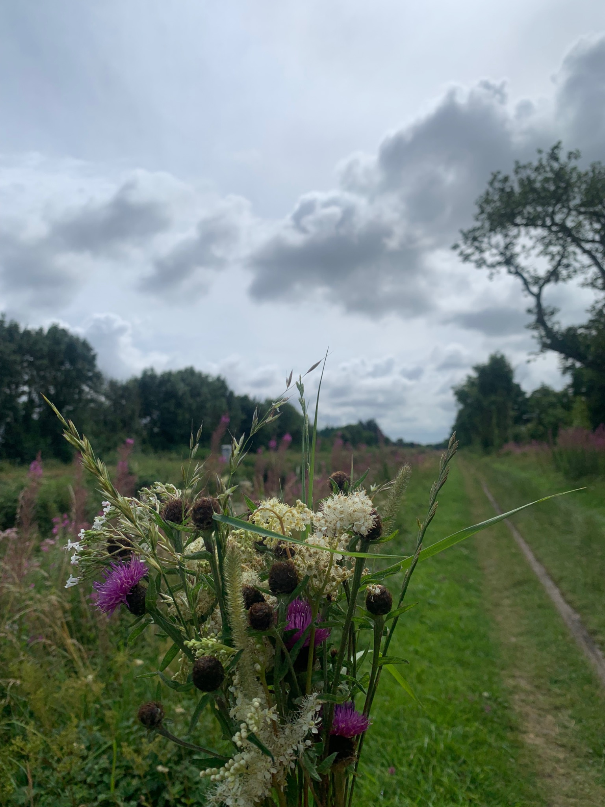
LET'S CONNECT
Open to research conversations, PhD opportunities and collaboration.